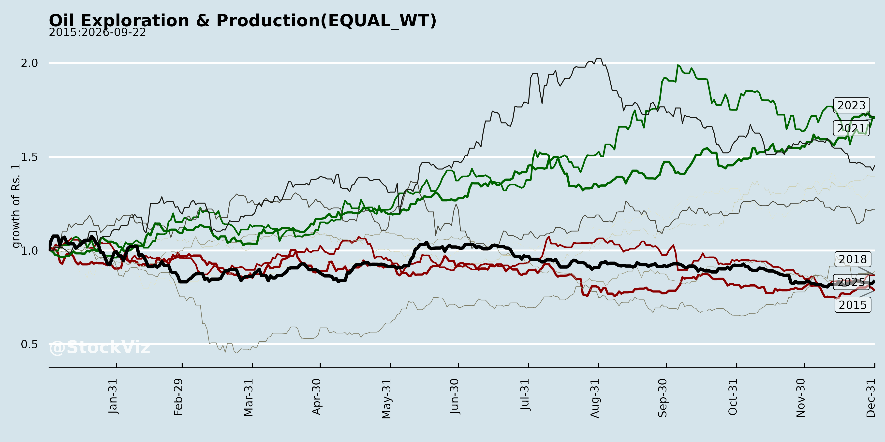
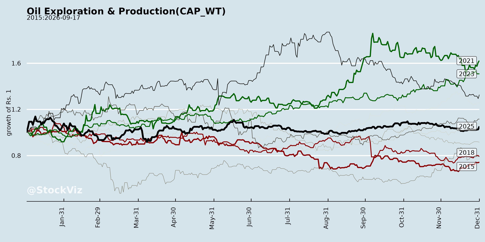
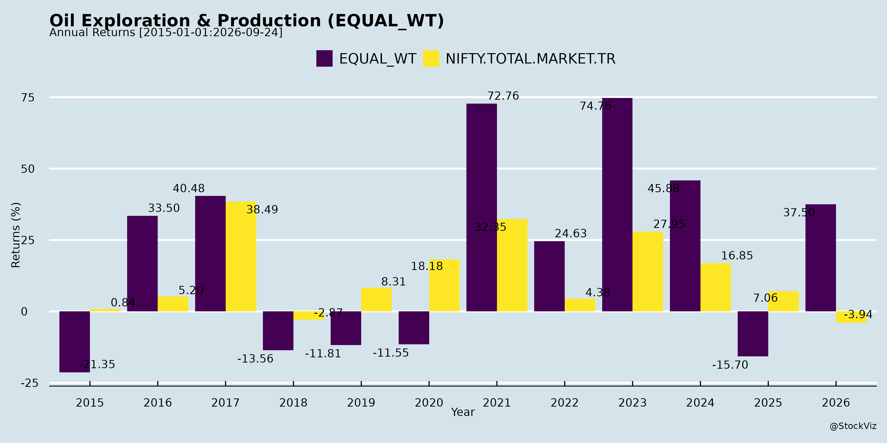
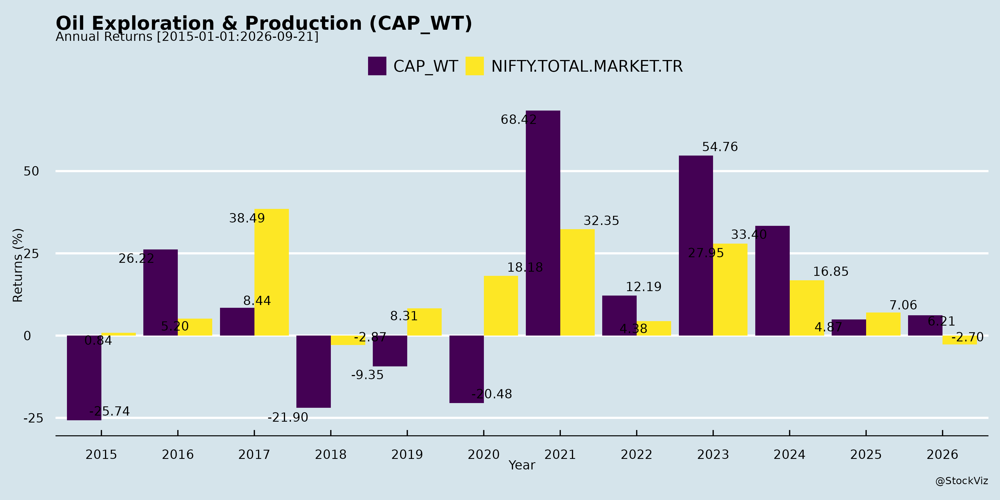
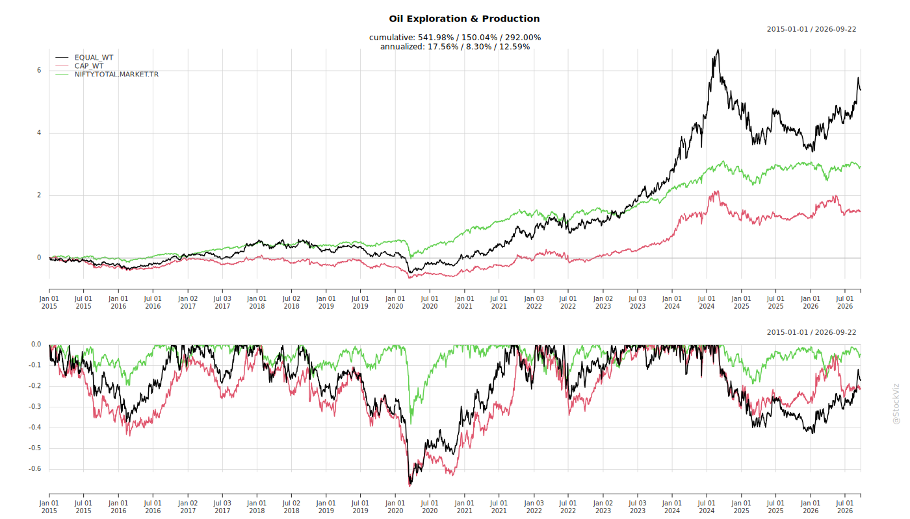
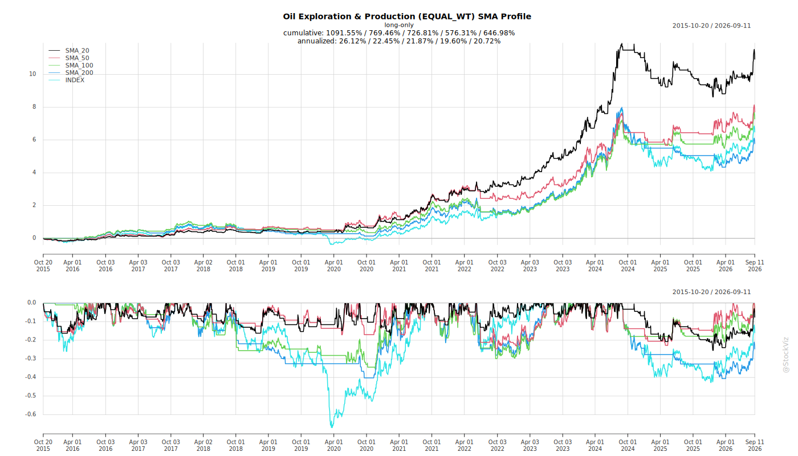
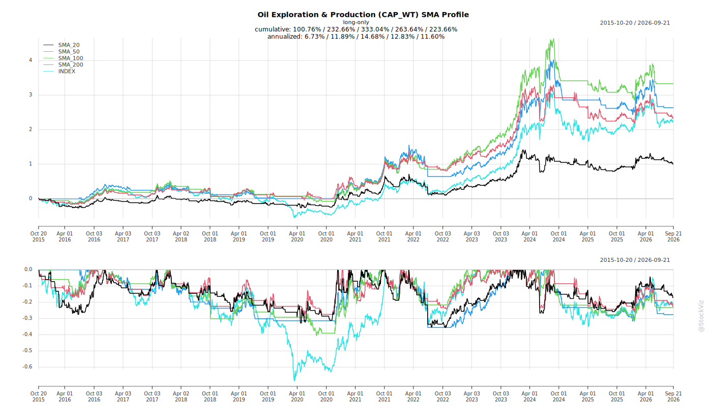
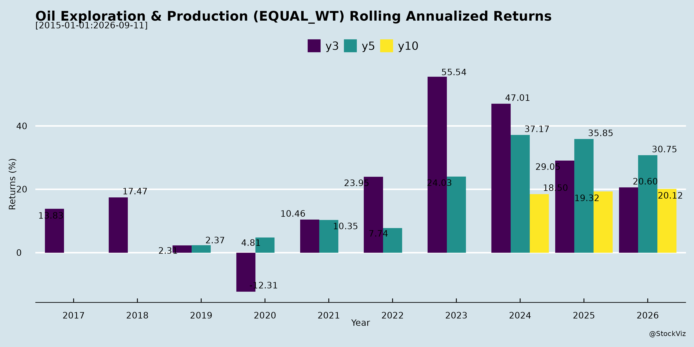
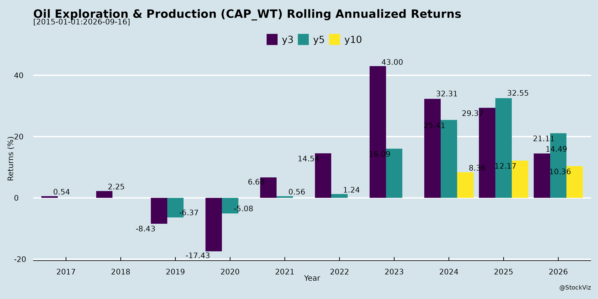

Annual Returns




Cumulative Returns and Drawdowns

SMA Scenarios


Current Distance from SMA
Rolling Returns


EBIT (% of Industry Total)
Revenue (% of Industry Total)
AI Summaries
Analyst
asof: 2025-11-27
Indian Oil Exploration & Production (E&P) Sector Analysis
Based on disclosures from Selan Exploration, HOEC, Oil India Ltd (OIL), and ONGC (Q2 FY26 period, Jul-Sep 2025). The sector shows resilience amid challenges, with OIL’s detailed earnings transcript providing the most granular insights. Key themes include production disruptions, price headwinds, exploration momentum, and infrastructure progress.
Headwinds
- Lower Crude Realizations: Avg. price ~$68/bbl (down ~18% YoY), driving ~44% revenue drop for OIL standalone (₹5,456 Cr Q2). Gas prices steady (~$6.78/MMBTU) but insufficient offset.
- Production Dips: OIL’s combined output at 1.652 MMTOE (minor QoQ/YoY decline); disruptions from Northeast ethnic blockades reduced oil to ~8,100 MT/day (now recovering to ~9,600 MT/day). NRL throughput dipped to 0.75 MMt due to crude supply constraints.
- Elevated Expenses: Write-offs/provisions ~₹1,423 Cr (Gabon, Bangladesh blocks + Andaman Vijaya Puram-2 well); employee costs up (gratuity revision). EBITDA margins compressed to 34% (vs 47% prior).
- External Factors: Regional socio-political issues (e.g., SC status demands) impacting NE ops.
Tailwinds
- Operational Discipline: 100% drilling targets met (18 wells Q2, 32 HY1; +28% YoY). Offshore milestones (Andaman gas occurrences flared; 3rd well drilling).
- Infrastructure Progress: Numaligarh-Siliguri pipeline commissioned (Oct 2025); DNPL expansion mechanical complete (target operational by Apr 2026, 1→2.5 MMSCMD); NRL at 100%+ utilization, GRM $10.56/bbl (+110% QoQ).
- Subsidiary Strength: NRL revenue +24% YoY (₹6,442 Cr), PAT ₹725 Cr Q2; bioethanol/formalin plants commissioned.
- Financial Resilience: PAT +29% QoQ (₹1,044 Cr standalone); dividend ₹3.5/share; capex execution ~80% HY1 (₹5,561 Cr vs ₹7,000 Cr budget).
Growth Prospects
- Production Ramp: OIL guidance: FY26 oil 3.55 MMt (scaled from 3.776), gas 3.6 bcm; FY27 oil 3.75 MMt/gas 3.8 bcm; FY28 oil ~4 MMt/gas 4.6 bcm. Compensatory H2 push via new wells/optimization.
- Exploration Upside: Andaman appraisal (supp. 3D seismic in 3-4 months; 3+1 wells planned); intl. revival (Mozambique force majeure lifted Nov 2025); partnerships (TotalEnergies SLA for deepwater).
- Integration & Expansion: NRL commissioning Dec 2025 (DHDT/CDU ready; full stabilization Q2 FY27); Paradip-Numaligarh pipeline; crude import flexibility (100+ varieties).
- Capex Momentum: FY26 >₹7,000 Cr (E&P ~60%); historical overruns signal aggressive investment.
Key Risks
- Geopolitical/Operational: NE disruptions could miss FY26 targets; dependency on demand (e.g., tea gardens seasonal dip).
- Commodity Volatility: Oil price sensitivity (govt.-regulated); inventory/GRM swings at NRL.
- Exploration Uncertainty: High write-off risk (Ind AS 106: no capitalization until proven discovery/economics); Andaman contingent resources pending appraisal.
- Execution Delays: NRL stabilization (2Q post-Dec); DNPL hook-up needs 7-day shutdown; intl. exits (Gabon/Bangladesh).
- Regulatory/Financial: PESO/PNGRB approvals; actuarial liabilities (gratuity up); sanctions on imports (e.g., Russia).
Summary: Indian E&P faces near-term price/production headwinds but strong tailwinds from exploration/infra. Growth hinges on H2 recovery (3.5+ MMTOE/Q), Andaman appraisal, and NRL scale-up, targeting 20%+ output growth by FY28. Risks center on externalities (NE stability, oil prices) but balanced by capex discipline and diversification. Sector outlook cautiously optimistic for FY26-28.
General
asof: 2025-11-27
Summary Analysis: Indian Oil & Gas Exploration & Production (E&P) Sector
Using the provided regulatory filings (SEBI LODR Regulation 30 disclosures from Antelopus Selan Energy Ltd., Hindustan Oil Exploration Co. Ltd. (HOEC), Oil India Ltd., ONGC, and Prabha Energy Ltd.), the sector appears stable with routine compliance activities. No major operational disruptions, financial shocks, or material events are disclosed. Share price volatility is noted as market-driven, director changes are procedural, auditor appointments are standard (especially for PSUs like ONGC), and AGMs indicate normal governance. Below is a structured analysis of headwinds, tailwinds, growth prospects, and key risks, inferred directly from the filings.
Tailwinds (Positive Factors)
- Operational Stability & Transparency: Companies like Antelopus Selan and HOEC emphasize “normal course of business,” alignment with prior guidance (e.g., Q2 financials), and prompt clarifications on price movements/directorate changes. This signals strong compliance culture and no hidden issues, boosting investor confidence.
- Governance Continuity: Routine events like director appointments/cessations (HOEC: Sharmila Amin’s tenure end, Bhavani Balasubramanian’s addition with audit expertise) and auditor nominations (ONGC: C&AG-appointed Rama K Gupta & Co., a PSU-experienced firm) reflect robust board refreshment and audit readiness for FY 2025-26.
- PSU Support: ONGC and Oil India’s filings (despite garbling) highlight government oversight (C&AG involvement), providing regulatory stability and access to national resources.
Headwinds (Negative Factors)
- Share Price Volatility: Antelopus Selan’s filing notes “recent movement” as “market-driven” with no company-specific triggers, suggesting speculative trading or sector-wide sentiment swings (e.g., oil price fluctuations or global E&P uncertainty).
- Disclosure Delays: HOEC faced exchange queries on late reporting of director changes (cessation on Dec 16, 2024; disclosure Dec 18), linked to board circular resolutions—minor but highlights procedural bottlenecks in fast-paced governance.
- Routine but Opaque Updates: Oil India’s garbled filing (possibly payment/dividend-related) and Prabha’s AGM notice lack forward-looking details, potentially fueling short-term uncertainty amid high compliance burden.
Growth Prospects
- Moderate, Continuity-Driven: No explosive catalysts, but stable ops (Selan: “in line with Q2 guidance”) and experienced leadership additions (HOEC: New ID with 40+ years in audits/PSUs; ONGC’s auditor with PSU track record like NTPC/PowerGrid) support sustained production. Prabha’s AGM/e-voting (Aug 2025) implies steady shareholder engagement for FY25 growth.
- PSU-Led Expansion Potential: ONGC/Oil India’s filings suggest FY26 audit readiness for scaling (e.g., audits for banks/PSUs), aligning with India’s E&P push (e.g., OALP bids). Routine filings indicate capacity for incremental output if global oil demand holds.
- Limited Upside Visibility: Prospects hinge on external oil prices; documents show no new discoveries/partnerships, capping near-term growth to low-single digits.
Key Risks
- Market & Speculative Volatility: Unexplained price surges (Selan) expose sector to retail-driven swings, amplified by low liquidity in mid/small-caps (e.g., HOEC, Prabha).
- Regulatory/Compliance Scrutiny: Delays flagged by exchanges (HOEC) risk fines/penalties under SEBI LODR; PSUs face C&AG overrides (ONGC: firm dissent/modification).
- Governance & Transition Risks: Director tenures ending (HOEC/Selan norms) could disrupt committees if approvals delay (e.g., shareholder postal ballots).
- External Dependencies: No filings address oil price crashes, geopolitical tensions, or transition to renewables—implicit risks for E&P profitability.
- Operational Normalcy as Double-Edged: “No material events” is reassuring but signals no diversification/innovation, vulnerable to flat production plateaus.
Overall Outlook: Neutral to Mildly Positive. Sector demonstrates resilience via compliance but lacks catalysts for breakout growth. Monitor global crude (~$70-80/bbl assumed stability) and upcoming Q3 results/AGMs for inflection points. Investors should favor PSUs (ONGC/Oil India) for stability over smaller players amid volatility.
Investor
asof: 2025-11-27
Summary Analysis: Indian Oil Exploration & Production (E&P) Sector
Based on the provided documents from key players like Selan Exploration Technology Limited (SEL), Oil India Limited (OIL), Prabha Energy Limited (PEL), Hindustan Oil Exploration Company (HOEC), and ONGC, the Indian E&P sector exhibits resilience amid a strong policy push for domestic gas production, but faces execution and external challenges. These mid/small-cap players focus on onshore/offshore assets, CBM, marginal fields, and exploration frontiers. Below is a structured analysis of headwinds, tailwinds, growth prospects, and key risks.
Tailwinds (Positive Factors)
- Policy & Gas Focus: Strong govt. support for domestic gas (e.g., CBM target of 5 MMSCMD by FY28 per PEL; free market pricing for CBM/marginal fields). Natural gas consumption projected to rise 60% to 746 MMSCMD by FY30 (PEL), with $60bn infra investment (pipelines to 30k km).
- Infrastructure Connectivity: Access to National Gas Grid (e.g., Urja Ganga for PEL’s CBM; OIL’s Numaligarh-Siliguri pipeline commissioned Oct 2025; DNPL expansion to 2.5 MMSCMD by Apr 2026).
- Resource Upgrades & Discoveries: SEL’s 2P in-place resources doubled in Bakrol/Karjisan; OIL’s Andaman gas occurrences; PEL’s 10 BCM CBM + 50k MMCF marginal fields.
- Operational Stability: SEL production up 61% YoY to 1,193 boepd (FY25); OIL at steady 9.7k+ MT/d despite dips; NRL (OIL sub) at 100%+ utilization, GRM $10.56/bbl.
- Corporate Actions: Mergers unlocking value (SEL-AEPL; PEL scheme simplifying structure); dividends (OIL INR3.5/share).
Headwinds (Challenges)
- Commodity Price Pressure: Crude realizations down 18% YoY to $67-68/bbl (OIL), slashing revenues ~44%; gas steady but demand seasonal (e.g., tea gardens off-season).
- Production Disruptions: Ethnic/social blockades in Northeast (OIL dip to 8.1k MT/d from 9.7k); natural declines (SEL offsetting via drilling).
- High Costs/Write-offs: Exploration provisions (OIL: INR723cr Andaman + INR700cr Bangladesh/Gabon in Q2FY26); employee costs up (OIL gratuity hike).
- External/Geopolitical: Force majeure in OIL’s Mozambique (lifted Nov 2025); legacy block exits (OIL Gabon/Bangladesh).
- Regulatory Delays: Pipeline approvals (OIL DNPL), PMLs (SEL Dangeru), FDP evaluations (SEL Cambay).
Growth Prospects
- Near-Term Production Ramp: SEL FY26 drilling (Bakrol/Karjisan Phase 2, Duarmara/Dangeru start); PEL CBM commercial from Q1/Q4 FY26 (NK: 74 wells; Jharia: 75 phased). OIL FY26 targets: oil 3.55-3.78 MMT, gas 3.6 bcm (FY27: oil 3.75 MMT, gas 3.8 bcm).
- Resource Monetization: SEL 2P reserves ~60 MMboe across assets post-merger; PEL CBM/marginal fields (10 BCM IGIP); OIL Andaman appraisal + deepwater partnerships (TotalEnergies/Woodside).
- Capex Acceleration: OIL H1FY26 spend INR5.6k cr (vs INR7k budget, exceeding prior years); SEL FY26 development focus; NRL expansion (Dec 2025 commissioning, 3 MMSCMD gas intake).
- Integrated Growth: OIL’s upstream-midstream-downstream (NRL GRM up 110% QoQ); sector-wide shift to gas (cleaner fuel, 70% EBITDA margins per PEL).
- Long-Term: Portfolio diversification (onshore/offshore/CBM); potential 2.5x+ production growth (SEL historical).
Key Risks
| Exploration/Technical |
Dry wells/write-offs (OIL Andaman/Vijayapuram); unproven CBM recovery (PEL). |
3rd-party reserves (SEL); appraisal seismics (OIL). |
| Operational |
Disruptions (ethnic issues, declines); execution delays (drilling/pipelines). |
Multi-field portfolio; phased capex (PEL). |
| Financial/Market |
Price volatility; high capex (OIL INR7k+ cr); EBITDA margins squeezed (OIL 34% vs 47%). |
Gas pricing freedom; internal cash flows. |
| Regulatory/Geopolitical |
Approvals (PESO/PNGRB); intl. instability (Mozambique). |
Domestic focus; JV partners (ONGC/IOC in PEL). |
| Other |
Capex overruns; inventory/throughput dips (NRL crude supply). |
Budget discipline (OIL exceeding targets). |
Overall Outlook: Bullish on gas-led growth (tailwinds dominate), with FY26-28 production/EBITDA upside from drilling/infra. However, near-term volatility from prices/disruptions warrants caution. Sector poised for value creation via policy/infra, but execution critical for mid/small players like SEL/OIL/PEL. Investors should monitor Q3FY26 production and approvals.
Press Release
asof: 2025-11-27
Summary Analysis: Indian Oil Exploration & Production (E&P) Sector
Using the provided press releases from Oil India Limited (OIL), ONGC Videsh (Mozambique LNG), and Prabha Energy Limited (PEL) as key inputs, the analysis focuses on recent developments in well operations, international LNG projects, and domestic unconventional gas production. These highlight operational resilience amid challenges in India’s E&P sector, which is pivotal for energy security amid govt targets (e.g., natural gas share to 15% by 2030, CBM to 5 MMSCMD by FY27-28).
Tailwinds (Supportive Factors)
- Operational Success & Expertise: OIL’s safe capping of Well KSG#76 (post-Oct 2025 blowout) demonstrates strong crisis management, global partnerships (e.g., Cudd Well Control, USA), and coordination with local operators (GeoEnpro), reinforcing sector capability in high-risk interventions.
- Project Reactivation: End of Force Majeure (declared May 2021) in Mozambique LNG Area 1 (ONGC Videsh 16% stake) due to improved security enables restart of 13.12 MMTPA LNG construction, unlocking delayed international growth.
- Domestic Unconventional Momentum: PEL’s commercial CBM gas production from North Karanpura block (with early cascade sales and pipeline nearing completion) aligns with govt reforms, private participation, and rising gas demand, signaling scalable E&P in marginal fields/NELP/CBM assets.
Headwinds (Challenges)
- Incident-Driven Disruptions: OIL’s blowout at Kharsang (causing uncontrolled gas release) underscores frequent well control issues, requiring resource-intensive responses and potential production halts.
- Historical Delays from External Factors: Mozambique project’s 4+ year suspension (2019-2025) due to Cabo Delgado insurgency highlights vulnerability to regional instability, inflating costs and timelines.
- Infrastructure Bottlenecks: PEL’s reliance on interim cascade sales (vs. full pipeline evacuation) points to execution delays in gas infrastructure, limiting immediate monetization.
Growth Prospects
- High: Strong upside from LNG restart (Mozambique: multi-billion USD project with ONGC exposure) and CBM ramp-up (PEL targeting volume surge post-pipeline; sector-wide govt push). OIL’s well control expertise positions it for more complex ops. Overall, sector benefits from policy tailwinds (e.g., NELP auctions, gas pricing reforms), diversified portfolio (onshore/offshore, conventional/unconventional), and energy transition focus, potentially boosting output 20-30% by 2030.
Key Risks
| Operational/Safety |
High-pressure blowouts, BOP failures leading to gas leaks/fire risks. |
OIL Well KSG#76 blowout (Oct 2025). |
| Geopolitical/Security |
Insurgencies disrupting projects; Force Majeure events. |
Mozambique CDP security (2021-2025 delay). |
| Execution/Infra |
Pipeline delays, contractor coordination issues. |
PEL’s ongoing gas evacuation pipeline work. |
| Regulatory/External |
Dependence on govt approvals, local community/state support. |
OIL thanks Arunachal admin/MoPNG; Mozambique govt notification. |
| Financial |
Capex overruns from restarts/delays; volatile commodity prices (implied). |
Multi-year LNG suspension costs. |
Overall Outlook: Bullish with tailwinds from project restarts and govt alignment outweighing headwinds, but risks demand robust risk mitigation (e.g., tech upgrades, insurance). Sector poised for 10-15% CAGR if incidents/security stabilize. Monitor Q3 FY26 earnings for production metrics.
Copyright © 2023 SAS Data Analytics Pvt. Ltd. All rights reserved.
🐞